Introducing Daily Briefing
Your whole day.
One scroll.
Weather, METAR and TAF, shifts, aircraft movements, the workout, calendar, tasks and today's focus — assembled every morning into one phone-ready briefing.
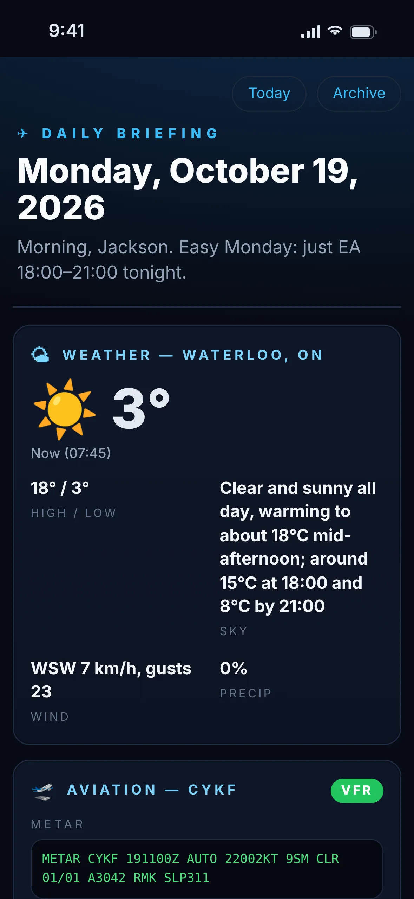
Weather
Local conditions,
before you step out.
Temperature, sky, wind and precip for home base — written in plain language, not just icons.
- Now, high and low at a glance
- Wind with gusts
- A short narrative for the rest of the day
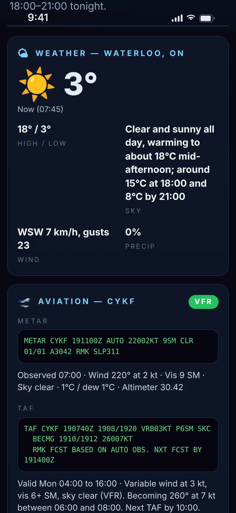
Aviation
METAR, TAF and a
VFR call you can trust.
Raw and decoded field weather for CYKF, plus a short note that ties the forecast to your shift.
- Live category badge: VFR, MVFR, IFR or LIFR
- Decoded wind, vis, sky and altimeter
- Frost and timing callouts when they matter
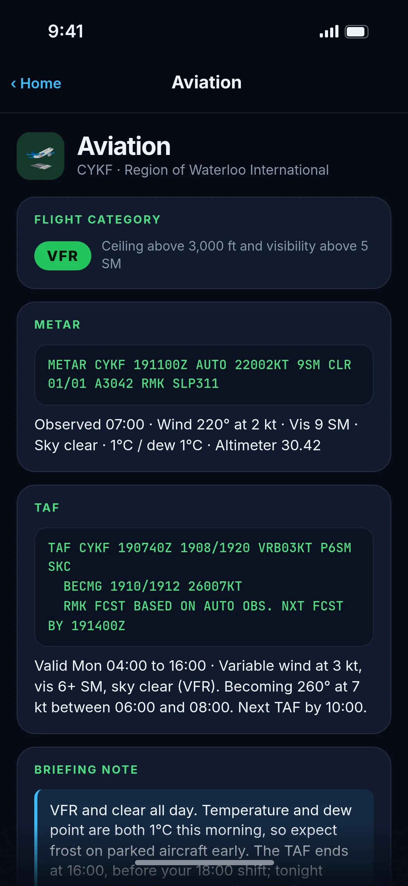
Work day
Shifts, movements and the workout.
Who you're working for, what's on the ramp, and when you're lifting — so the day doesn't collide with itself.
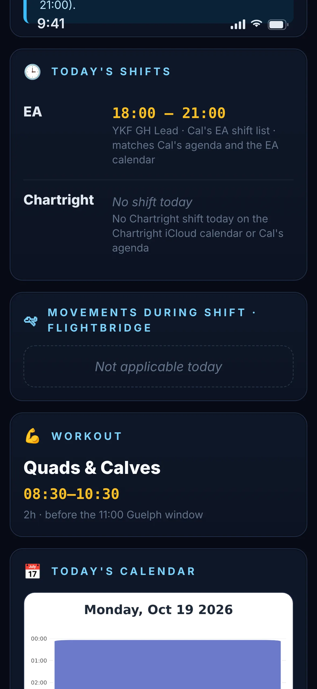
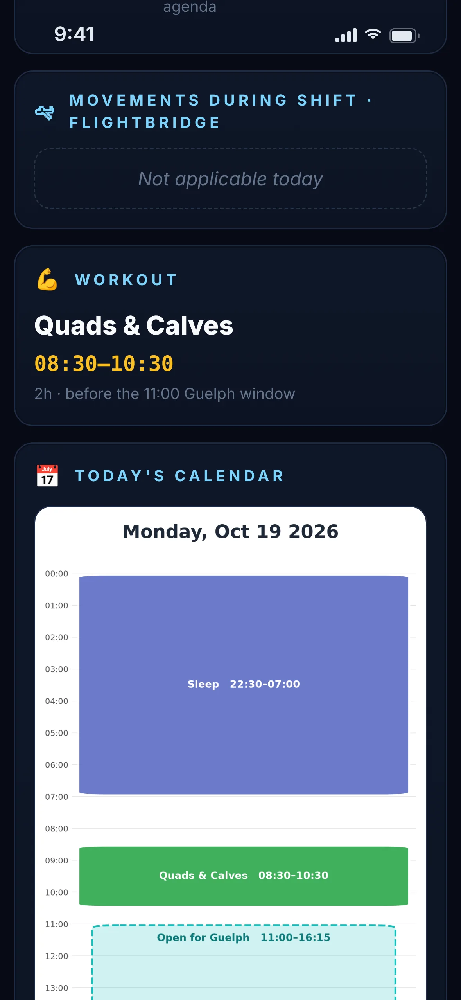
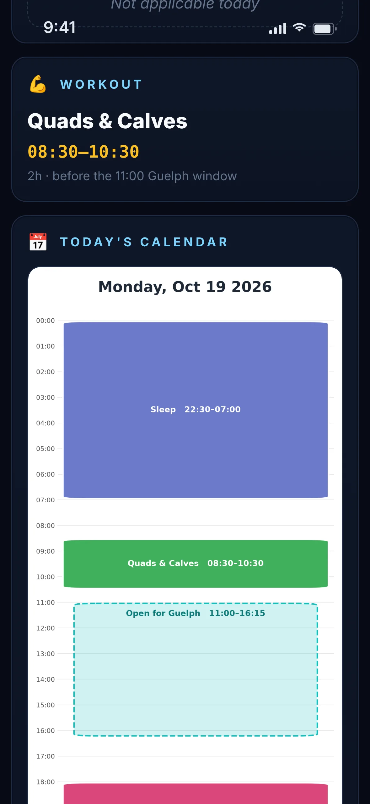
The day ahead
Calendar, tasks and one clear focus.
Your week view, the open list, and a single orange card that says what actually matters today.
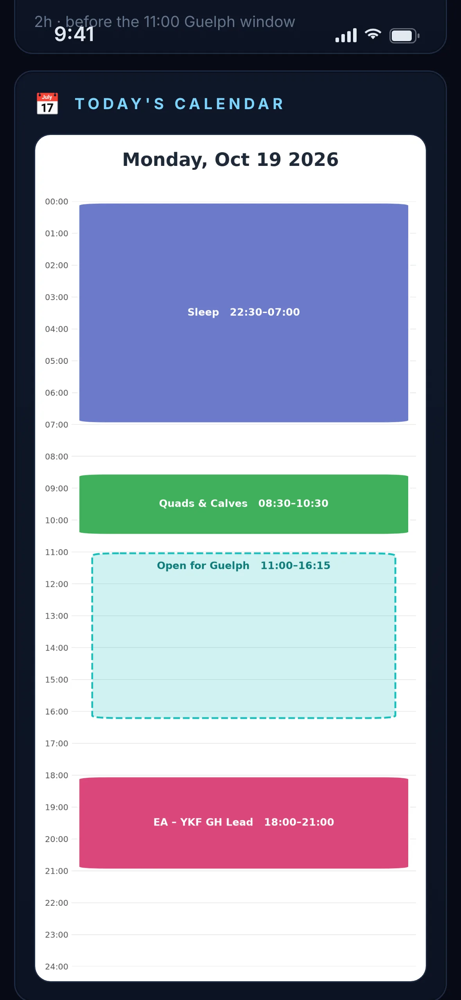
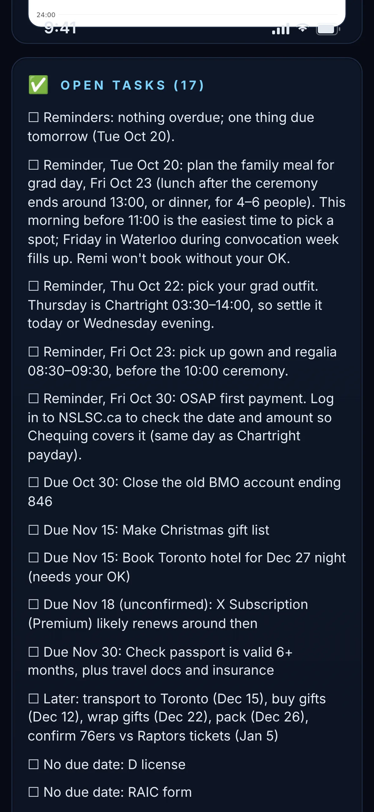
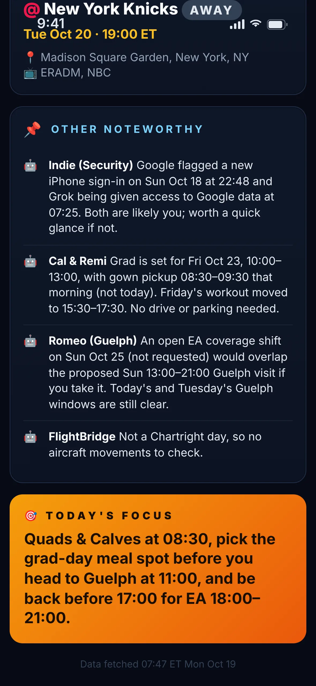
And more
Prospects, the Sixers, and every past day.
Career leads with NEW badges, the next 76ers tip-off, and an archive of every briefing you've published.
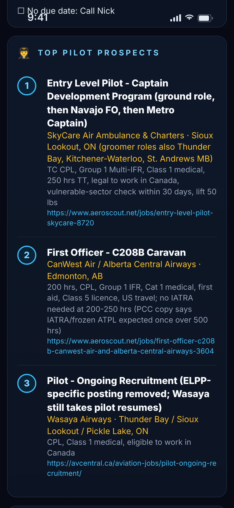
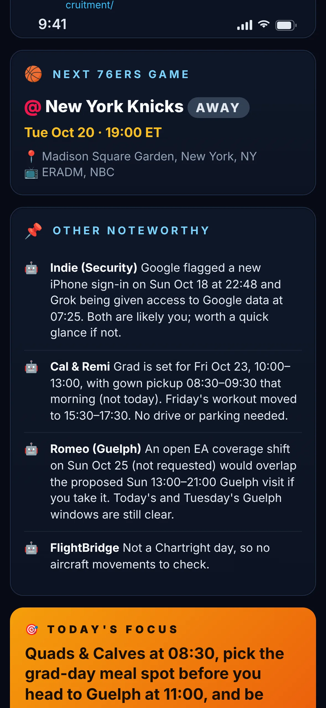
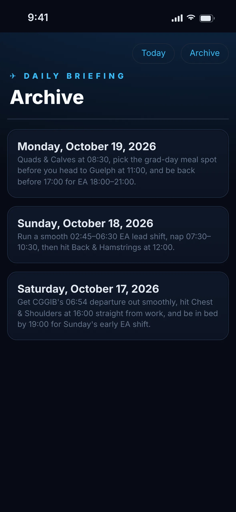
On your phone
A PWA you can
add to the Home Screen.
Open the live briefing on your iPhone, tap Share, then Add to Home Screen. It launches full-screen with its own icon — no App Store required yet.
- Works offline once cached
- Dark theme that matches the briefing
- Public copy never includes money data
Your morning, already assembled.
Open the live briefing on your phone, then Add to Home Screen.